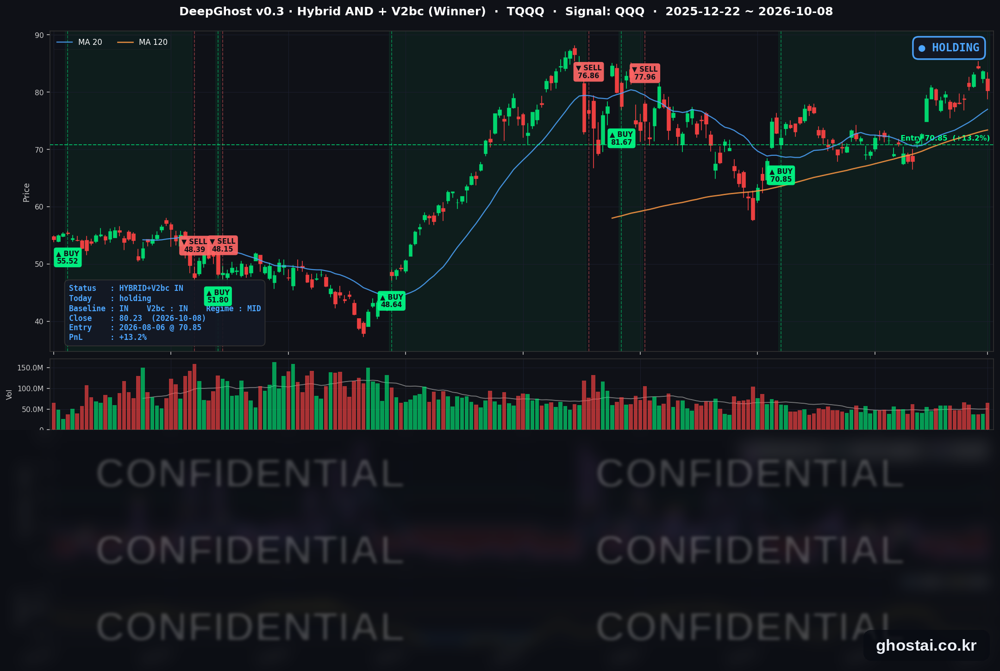

OpenAI 매출 기대치 하향 AI주 급락, S&P 종목 68% 상승
· Ghost.AI 데일리 리포트
👻 매일 시그널과 히스토리를 홈페이지에서 한눈에 → www.ghostai.co.kr
회원 페이지 안내 — 회원 가입하시면 커버리지 전 종목의 원본 시그널과 분석 레포트를 매일 확인하실 수 있습니다. 회원 페이지는 블로그·유튜브보다 먼저 업데이트됩니다. 선착순 100명을 모집하고 있으며, 이메일과 필명만으로 가입하실 수 있고 서비스 사용료는 받지 않습니다. 가입 신청 후 운영자 승인을 거쳐 이용하실 수 있습니다.
OpenAI의 연환산 매출이 알려진 것보다 200억 달러가량 적은 500억 달러 안팎이라는 파이낸셜타임스(FT) 보도가 나오면서 반도체·AI 하드웨어·데이터센터 전력 관련주가 크게 내렸습니다. 나스닥 종합은 1.25% 내려 8월 18일 이후 가장 큰 하락을 기록했지만, S&P 500 구성종목 493개 중 335개(68%)는 올랐습니다. 30년물 입찰 수요가 양호해 10년물 금리는 4.6bp 내린 5.231%로 마감했습니다. 나스닥100(QQQ)은 1.34% 내렸고, TQQQ 전략은 45거래일째 보유를 유지했습니다(전략 수익률 +13.24%).
📊 오늘의 매매 신호
| 항목 | 내용 |
|---|---|
| 오늘 할 일 | ✅ 아무것도 안 해도 됩니다 |
| 포지션 상태 | 📈 TQQQ 보유 중 (IN POSITION) |
| 매수 진입일 | 2026-08-06 (45거래일째) |
| 진입가 → 현재가 | $70.85 → $80.23 |
| 현재 포지션 수익 | +13.24% |
TQQQ 시그널 — IN POSITION
현재 상태: 매수 포지션 유지 중 | 이번 포지션 수익 +13.24%

QQQ가 -1.34% 내리면서 TQQQ는 -4.05% 내린 80.23달러로 마감했습니다. 8월 6일 진입 이후 하루 하락 폭으로는 8월 18일(-5.07%) 다음으로 큽니다. 전략의 평가수익률은 전 거래일 +18.02%에서 +13.24%로 낮아졌습니다. 오늘 새 신호는 없었고 전략은 보유를 유지했지만, 모델 기준으로 매도 신호까지의 여유는 전일보다 줄었습니다. TQQQ 종가는 사상 최고 종가(6월 2일, 87.22달러)보다 8.01% 낮습니다.
이날 하락은 금리 때문이 아니었습니다. 10년물 금리는 4.6bp 내렸고, 하락은 OpenAI 매출 보도로 반도체·AI 하드웨어 종목에 몰렸습니다. 오늘은 금리가 떨어졌음에도 QQQ는 크게 내렸습니다.
8월 6일 진입 이후 QQQ가 하루 1% 넘게 내린 날은 오늘이 다섯 번째입니다(8월 18일, 9월 1일, 9월 10일, 9월 28일, 10월 8일). 앞선 네 번은 S&P 500 구성종목 중 오른 종목이 절반에 못 미쳤고 종목 중간값도 모두 마이너스였지만, 오늘은 68%가 올랐습니다. 하락이 AI 관련주에 머무를지, 10월 14일 9월 CPI를 전후로 시장 전반으로 번질지가 관전 포인트입니다.
오늘 미국 시장 — 시황 요약
지수 마감
| 지수 | 종가 | 등락률 | 사상 최고 종가 대비 |
|---|---|---|---|
| S&P 500 | 7,765.36 | -0.47% | -0.69% (10/6) |
| 나스닥 종합 | 27,193.34 | -1.25% | -1.47% (10/6) |
| 다우존스 | 51,231.64 | +0.10% | -5.74% (8/5) |
| 러셀 2000 (IWM) | 277.57 | -0.05% | -9.02% (8/14) |
| QQQ (나스닥100) | 747.58 | -1.34% | -1.59% (10/6) |
| TQQQ | 80.23 | -4.05% | -8.01% (6/2) |
10월 6일 사상 최고 종가를 기록한 S&P 500·나스닥 종합·QQQ가 이틀 연속 내렸고, 오늘 사상 최고 종가는 없었습니다. 나스닥 종합과 QQQ는 둘 다 8월 18일 이후 하루 하락 폭이 가장 컸습니다. 3대 지수 중 다우만 0.10% 올랐는데, 에너지·필수소비재·금융주가 오른 영향입니다. 러셀 2000(IWM)은 0.05% 내려 거의 보합이었습니다.
국채 금리 동향
| 만기 | 수익률 | 전 거래일 대비 |
|---|---|---|
| 3개월 | 4.043% | +0.6bp |
| 2년 (재무부 공시) | 4.75% | -2bp |
| 5년 | 4.991% | -3.0bp |
| 10년 | 5.231% | -4.6bp |
| 30년 | 5.606% | -5.5bp |
장기물 중심으로 금리가 내렸습니다. 10년물 하락 폭은 10월 1일 이후, 30년물은 8월 25일 이후 가장 컸고, 5년물은 9월 23일 이후 처음 5% 아래로 내려왔습니다. 오후 1시 30년물 입찰(220억 달러)은 낙찰 금리 5.618%, 응찰률 2.54배로 최근 6회 평균(2.41배)을 웃돌았고, 해외 수요를 보여 주는 간접 응찰 비중도 72.3%로 평균(69.1%)보다 높았습니다. 입찰 수요와 트럼프 대통령의 "중간선거 전 이란 공격 없음" 발언이 금리 하락 요인으로 거론됐습니다.
만기가 길수록 더 많이 내려 커브는 전일과 반대로 평탄해졌습니다. 재무부 기준 2년물과 10년물의 차이는 51bp에서 47bp로, 10년물과 3개월물의 차이는 124.0bp에서 118.8bp로 좁아졌고 역전은 없습니다. 전일 금리 상승에 크게 내렸던 주택건설·은행·리츠는 오늘 반등했습니다.
연준 발언 & 금리 패스
- 월러(Waller) 이사 (10/8, 이스탄불 경제포럼): "인플레이션을 2% 목표로 더 빨리 되돌리기 위해 추가 인상을 예상한다"고 말했습니다. 이어 "인상이 연속된 회의에서 이뤄질 필요는 없지만, 받아들일 수 있는 기간 안에 이뤄져야 한다"고 덧붙였습니다.
- 물가·고용 평가: 물가는 원하는 수준보다 높고 개선이 충분하지 않다고 봤습니다. AI 투자 확대가 첨단 기술 소비재 가격을, 중동 분쟁이 에너지 가격을 끌어올리고 있다는 점도 짚었습니다. 노동시장은 9월 일자리 증가 폭이 줄었지만 견조하다고 평가했습니다.
- 시장 가격: 연설문은 선물 시장이 12월 회의까지 최소 한 번 인상할 확률을 85%로 반영하고 있다고 적었습니다.
시장 해석은 매파적이지만 속도에는 유연입니다. "연속 회의일 필요는 없다"는 발언은 10월 27~28일 회의에서 동결할 여지로 받아들여졌고, 2년물 금리는 발언 직후 올랐다가 2bp 하락으로 마감했습니다. 정책금리는 3.75~4.00%이며, 10월 14일 9월 CPI가 인상 시점(10월 또는 12월)을 가를 다음 재료입니다.
오늘의 핵심 이슈
- OpenAI 매출 보도에 AI 관련주 약세. FT는 OpenAI의 9월 말 연환산 매출이 500억 달러에 가깝다고 보도했습니다. 9월 말 여러 매체가 보도한 680억~700억 달러보다 200억 달러가량 적고, 앤트로픽과 매출 계산 방식이 달라 생긴 차이라는 설명도 함께 보도됐습니다. 반도체 ETF SOXX는 3.35% 내려 9월 14일 이후 가장 많이 내렸고, 코히런트(-9.63%)·비스트라(-6.35%)·오라클(-5.48%)도 크게 내렸습니다.
- 지수는 내렸지만 S&P 500 종목의 3분의 2는 상승. 구성종목 중간값은 +0.87%로, 지수가 중간값보다 1.33%p 낮았던 것은 7월 16일 이후 가장 큰 차이입니다. 시가총액이 큰 엔비디아·브로드컴·마이크로소프트·아마존이 내려 지수는 하락했지만, IT 서비스(+5.11%)·에너지(+2.71%)·필수소비재(+2.27%)·소매(+2.22%)는 올랐습니다. 펩시코는 3분기 실적 발표 뒤 3.73% 올랐습니다.
- 이란 작전 준비 보도에 원유 ETF 2.55% 상승. 악시오스는 미 국방부가 중부사령부에 이란에 대한 대규모 작전 재개 준비를 지시했다고 보도했고, 공격 날짜는 정해지지 않았습니다. 장중 트럼프 대통령이 중간선거 전 공격은 없다고 밝히면서 유가는 상승 폭을 일부 줄였지만, S&P 500 에너지 21종목은 모두 올랐습니다.
변동성 & 투자심리
VIX는 15.08에서 15.41로 2.19% 올랐습니다. 나스닥이 1.25% 내렸지만 VIX는 15대에 머물렀습니다. CNN 공포탐욕지수는 전 거래일 44.5에서 38.1로 내려 "공포" 구간에서 더 내려왔습니다(1주 전 29.0, 한 달 전 39.1). 구성 지표 7개 중 정크본드 수요는 "극단적 탐욕"이고, 주가 강도는 "극단적 공포"입니다. AI 관련주에는 비관이 커졌지만 나머지 종목 대부분은 오른 날이었습니다.
매크로 & 원자재
| 품목 | 종가 | 등락률 |
|---|---|---|
| 원유 ETF (USO) | $147.58 | +2.55% |
| 금 ETF (GLD) | $378.62 | +0.73% |
- 유가: 이란 작전 준비 보도와 걸프 해역·호르무즈 해협의 선박 공격 소식에 올랐습니다. USO 상승 폭은 10월 1일 이후 가장 컸고, 정유사 마라톤페트롤리엄(+4.77%)·발레로(+4.65%)가 에너지 업종 상승을 이끌었습니다.
- 금: GLD는 0.73% 올랐습니다.
- 신규 실업수당 청구: 10월 3일 주간 19만 7천 건으로 전주보다 2천 건 줄었습니다(4주 평균 19만 8천 건).
- 펩시코 3분기: 매출이 5.6% 늘었고 핵심 EPS 2.34달러로 예상치를 웃돌았습니다. 연간 가이던스는 낮췄지만 주가는 7월 1일 이후 가장 많이 올랐습니다.
주요 종목 동향
| 종목 | 종가 | 등락률 | 비고 |
|---|---|---|---|
| NFLX | 71.57 | +2.68% | 4거래일 연속 상승 |
| AAPL | 340.42 | +1.11% | 사상 최고 종가(9/25) 대비 -0.19% |
| META | 720.89 | -0.06% | 3거래일 연속 하락 |
| GOOGL | 348.29 | -0.63% | |
| QCOM | 176.01 | -0.63% | |
| TSLA | 375.00 | -0.74% | |
| MSFT | 522.61 | -1.35% | |
| AMZN | 254.06 | -2.25% | 8/31 이후 최대 하락 |
| NVDA | 230.48 | -2.94% | 9/14 이후 최대 하락 |
| AVGO | 360.14 | -4.35% | 9/14 이후 최대 하락 |
| MU | 1,035.84 | -4.79% | 9/14 이후 최대 하락 |
| INTC | 107.08 | -5.34% | 9/28 이후 최대 하락 |
커버리지 12종목 중 2종목이 오르고 10종목이 내렸습니다. S&P 500 구성종목의 68%가 오른 날이지만 대형 기술주는 약했고, 8종목이 올랐던 전일과 반대였습니다. 브로드컴은 OpenAI와 맞춤형 칩을 함께 개발하고 있어 보도에서 따로 거론됐습니다. 마이크론은 같은 날 삼성전자가 분기 최대 영업이익(잠정 약 107.4조 원)을 발표했지만 4.79% 내렸습니다. 인텔은 머스크가 추진하는 테라팹 반도체 공장 프로젝트에 TSMC가 참여할 수 있다는 보도까지 겹쳐 커버리지 종목 중 가장 많이 내렸습니다.
다음 일정 (미 동부시간)
- 10/9(금) 장 시작 전 델타항공 3분기 실적(10:00 컨퍼런스콜) / 10:00 미시간대 소비자심리 10월 예비치
- 10/12(월) 콜럼버스 데이 — 채권 시장 휴장, 주식 시장 정상 개장
- 10/13(화) 장 시작 전 JP모건 3분기 실적 / 03:45 월러 이사 AI 대담(뉴델리)
- 10/14(수) 08:30 9월 CPI / 14:00 베이지북
- 10/15(목) 08:30 9월 PPI
- 10/16(금) 09:15 9월 산업생산
- 10/27~28 FOMC
Ghost.AI — Quantitative AI Investment
Model: DeepGhost v0.3 | Transformer-Based Deep Learning
Coverage: 14 tickers | Updated every trading day after US market close
⚠️ 본 자료는 정보 제공 목적으로만 작성되었으며 투자 권유가 아닙니다. 모든 투자의 책임은 투자자 본인에게 있습니다. 과거 성과가 미래 수익을 보장하지 않습니다.
[유의사항]
- 본 서비스는 불특정 다수를 대상으로 발행되는 단방향 정보 제공 서비스이며, 투자자 개인의 재산 상황·투자 목적·위험 선호도를 반영한 개별 투자 조언이 아닙니다.
- 고스트에이아이 주식회사는 고객과 쌍방향 의사소통(개별 상담, 맞춤형 자문 등)을 제공하지 않습니다.
- 본 콘텐츠는 투자 권유 또는 매매 주문의 청약·청약의 권유에 해당하지 않으며, 최종 투자 판단 및 그에 따른 손익의 책임은 전적으로 투자자 본인에게 있습니다.
고스트에이아이 주식회사